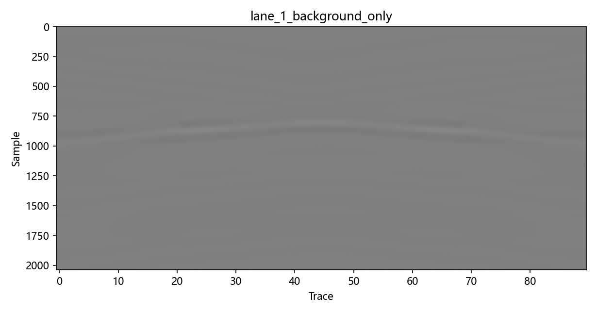
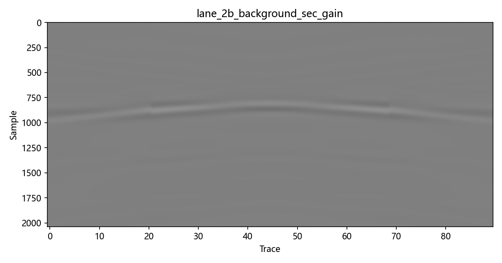
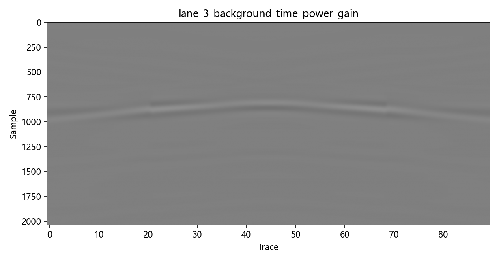
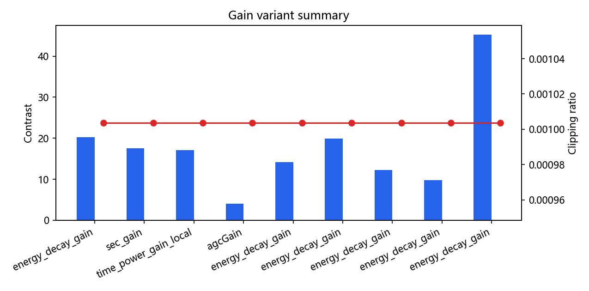

AT-005A No-Zero-Time Gain Validation
Interpretation boundary: AGC is display-oriented and non-amplitude-preserving. Field lane, if present, is heuristic visual QC only. AutoTune superiority is not claimed unless the lane table supports it.
Conclusion
- Best visual gain variant:
energy_decay_gain - Most conservative/interpretable gain:
energy_decay_gain - AutoTune status:
improved_on_roi_contrast_metric_only_not_overall_claim - Field lane: Field lane ran on C:\Users\17844\Desktop\02_Preprocessed_Standard\2025-09_营山\Line9origin(36).csv; heuristic visual QC only.
- 100-round loop completed:
True
Key Figures





Lane Summary
| Lane | Branch | Gain | ROI contrast | Clipping | Validity | Figure |
|---|---|---|---|---|---|---|
| lane_0_raw_input | raw | none | 133.9 | 0.001004 | valid_with_caveats | figure |
| lane_1_background_only | manual | none | 20.24 | 0.001004 | valid_with_caveats | figure |
| lane_2_background_energy_decay_gain | manual | energy_decay_gain | 20.28 | 0.001004 | valid_with_caveats | figure |
| lane_2b_background_sec_gain | manual | sec_gain | 17.6 | 0.001004 | valid_with_caveats | figure |
| lane_3_background_time_power_gain | manual | time_power_gain_local | 17.14 | 0.001004 | valid_with_caveats | figure |
| lane_4_background_agc_gain | manual | agcGain | 4.025 | 0.001004 | valid_with_caveats | figure |
| lane_5_dewow256_background_energy_decay | diagnostic | energy_decay_gain | 14.15 | 0.001004 | valid_with_caveats | figure |
| lane_6_dewow512_background_energy_decay | diagnostic | energy_decay_gain | 19.93 | 0.001004 | valid_with_caveats | figure |
| lane_7_filter_background_energy_decay | diagnostic | energy_decay_gain | 12.27 | 0.001004 | valid_with_caveats | figure |
| lane_8_dewow256_filter_background_energy_decay | diagnostic | energy_decay_gain | 9.774 | 0.001004 | valid_with_caveats | figure |
| lane_auto_background_energy_decay | auto_tuned | energy_decay_gain | 45.25 | 0.001004 | valid_with_caveats | figure |
| field_raw_input | field_visual | none | -- | 0.001001 | valid_with_caveats | figure |
| field_background_only | field_visual | none | -- | 0.001001 | valid_with_caveats | figure |
| field_background_energy_decay_gain | field_visual | energy_decay_gain | -- | 0.001001 | valid_with_caveats | figure |
| field_background_time_power_gain | field_visual | time_power_gain_local | -- | 0.001001 | valid_with_caveats | figure |
| field_background_agc_gain | field_visual | agcGain | -- | 0.001001 | valid_with_caveats | figure |
{kind=link}
{kind=link}
{kind=link}
{kind=link}
{kind=link}
{kind=link}
{kind=link}
{kind=link}
{kind=link}
{kind=link}
{kind=link}
{kind=link}
{kind=link}
{kind=link}
{kind=link}
{kind=link}
Gain Variant Table
| Gain | Semantics | ROI contrast | Clipping | Amplitude preservation |
|---|---|---|---|---|
| energy_decay_gain | interpretable empirical energy-decay compensation | 20.28 | 0.001004 | more_interpretable_than_agc_but_not_physical_proof |
| sec_gain | monotonic depth/time compensation | 17.6 | 0.001004 | more_interpretable_than_agc_but_not_physical_proof |
| time_power_gain_local | validation-local monotonic time-power display/compensation | 17.14 | 0.001004 | limited_monotonic_gain_assumption |
| agcGain | display-oriented non-amplitude-preserving local normalization | 4.025 | 0.001004 | invalid_for_amplitude_interpretation |
| energy_decay_gain | interpretable empirical energy-decay compensation | 14.15 | 0.001004 | more_interpretable_than_agc_but_not_physical_proof |
| energy_decay_gain | interpretable empirical energy-decay compensation | 19.93 | 0.001004 | more_interpretable_than_agc_but_not_physical_proof |
| energy_decay_gain | interpretable empirical energy-decay compensation | 12.27 | 0.001004 | more_interpretable_than_agc_but_not_physical_proof |
| energy_decay_gain | interpretable empirical energy-decay compensation | 9.774 | 0.001004 | more_interpretable_than_agc_but_not_physical_proof |
| energy_decay_gain | interpretable empirical energy-decay compensation | 45.25 | 0.001004 | more_interpretable_than_agc_but_not_physical_proof |
100-Round Micro-Iteration Loop
Completed: True; code-changing iterations: 0; evidence/report-only iterations: 1; no-op inspection iterations: 99. See hundred_round_iteration_summary.md.
Next Recommended Task
Fix gprMax/native zero-time default or no-zero-time lane policy first, then rerun AT-002/AT-003 with safer dewow windows before changing AutoTune scoring.
Known Risks
- Zero-time is intentionally excluded; this artifact does not repair zero-time correction.
- AGC is display-oriented and non-amplitude-preserving.
- Field lane is visual/heuristic QC only and has no ground-truth claims.
- GX-003 ROI is used as-is; candidate ROI from AT-004 is not substituted.